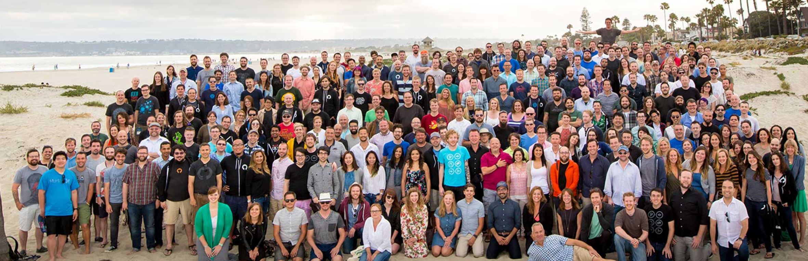

Gender Diversity at GitHub
GitHub attempts to diversify the workplace by reaching out to exceptional individuals from unresourced communities and diverse backgrounds in order to both give them new opportunities and have them impact Github in a variety of ways, in both the non-technical and technical spheres. Unlike other fintech companies, GitHub proves to have hired a higher percentage of females, which is shown in this chart.

: